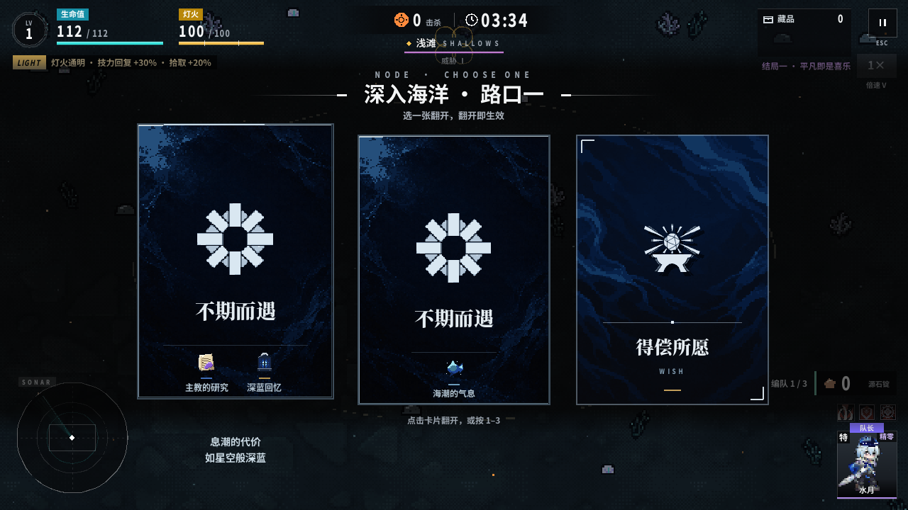

C · 信物路线精修
复用现有信物，保留原色。图标采用原生 32px，缩小间距，卡底统一对齐，补上名称。选中后只显示结局名称，双路线分两行；不再显示标题和重复的信物名称。

精修版 · 双路线
可直接复用的九个信物图标
来自现有 art/incoming/relic_*.png，均为 32×32。当前卡面用海潮的气息、主教的研究、深蓝回忆代表三条路线；不是本次选牌必得奖励，也不代表已经持有。
主教的研究relic_220.png · 32×32深蓝之心relic_221.png · 32×32海潮的气息relic_222.png · 32×32退行的罗辛南特relic_223.png · 32×32骑士骨血relic_225.png · 32×32“决心”relic_238.png · 32×32“观望”relic_239.png · 32×32“犹疑”relic_240.png · 32×32深蓝回忆relic_242.png · 32×32
本页是实际游戏捕获的设计预览，未正式接入。首次探索隐藏路线提示的规则保留。手机布局尚未验证。